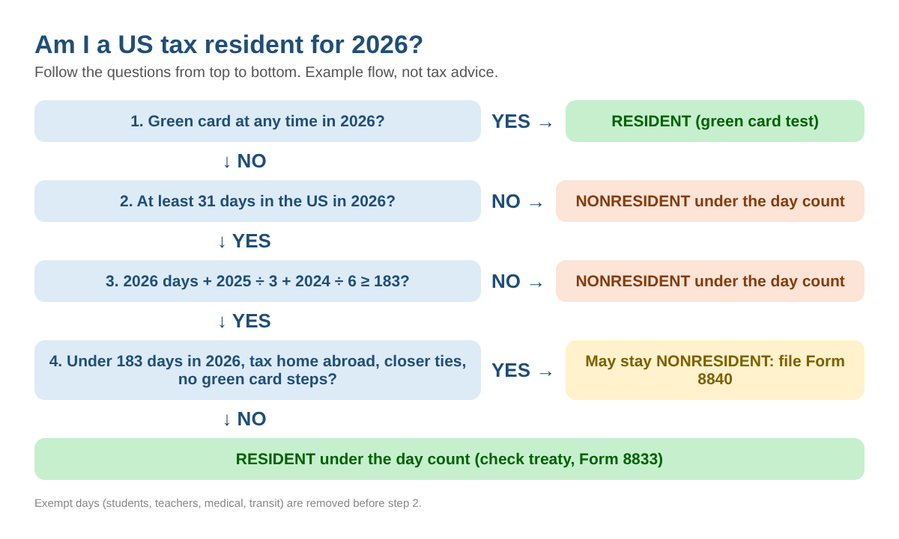
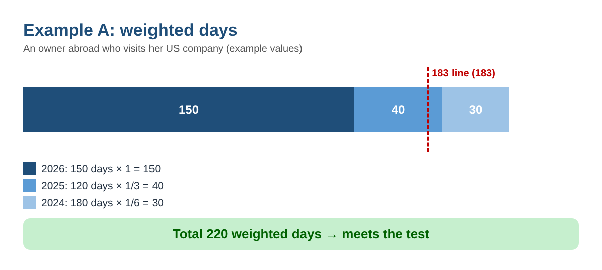
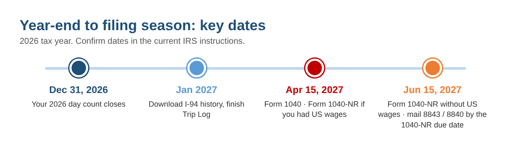

Am I a US Tax Resident? How to Count Your Days for the 183-Day Test (2026)
↓ Get the free Excel + PDF kit for this article
If you split your year between the US and another country, one question decides how you file: are you a US tax resident? Business owners who live abroad and visit their US company, people who moved here this year on a work or investor visa, students, scholars and parents on long visits all run into it. A resident reports worldwide income on Form 1040. A nonresident generally reports only US-source income on Form 1040-NR. The answer usually comes down to counting days, and the count is easy to get wrong.
This guide walks you through the IRS substantial presence test (often called the 183-day rule) step by step, with formulas you can type into Excel or Google Sheets, worked examples, the exceptions that change the answer, and the forms and dates for the 2026 tax year.
Step 1: Know the two parts of the test
For 2026 you meet the substantial presence test if both of these are true:
- You were physically present in the US on at least 31 days in 2026, and
- You were present at least 183 days during 2026, 2025 and 2024, counting all the days in 2026, 1/3 of the days in 2025 and 1/6 of the days in 2024.
If you held a green card at any time during the year, you are a resident under the separate green card test, whatever your day count.

Step 2: Count every day you were in the US
The IRS treats you as present on any day you are physically in the US at any time during the day. That means the arrival day and the departure day both count. A 3-night hotel stay is usually 4 days.
The most reliable way to rebuild your history is to download your I-94 travel history from the official CBP website, then check it against boarding passes and passport stamps. Put each trip on its own row in a sheet:
| Column | What to type | Example (example values) |
|---|---|---|
| A | Arrival date | 6/1/2026 |
| B | Departure date | 7/31/2026 |
| C | Days in 2026 | =MAX(0,MIN(B2,DATE(2026,12,31))-MAX(A2,DATE(2026,1,1))+1) → 61 |
| D | Days in 2025 | =MAX(0,MIN(B2,DATE(2025,12,31))-MAX(A2,DATE(2025,1,1))+1) → 0 |
| E | Days in 2024 | same formula with 2024 → 0 |
Example values. Copy the formulas down one row per trip, then total each column with =SUM(C2:C50).
The MIN and MAX parts clip each trip to the calendar year, so a trip from November 2, 2024 to January 13, 2025 correctly gives 60 days in 2024 and 13 days in 2025.
Days you do not count
- Days you regularly commuted to work in the US from a home in Canada or Mexico
- Less than 24 hours in the US while traveling between two places outside the US
- Days as a regular crew member of a foreign vessel
- Days you could not leave because of a medical condition that arose while you were in the US
- Days as an exempt individual, such as certain students on F, J, M or Q visas and teachers or trainees on J or Q visas
Subtract these from the yearly totals before Step 3. Exempt individuals and people with medical-condition days generally file Form 8843 to explain them.
Step 3: Do the weighted math
With three yearly totals in B2 (this year), B3 (last year) and B4 (two years ago), this one formula gives the answer:
=IF(AND(B2>=31, B2+B3/3+B4/6>=183), "Meets test", "Does not meet")

| Example (example values) | 2026 / 2025 / 2024 days | Math | Result |
|---|---|---|---|
| A. Owner abroad visiting her US company | 150 / 120 / 180 | 150 + 40 + 30 = 220 | Meets the test |
| B. Moved on an investor visa in June 2026 | 200 / 20 / 0 | 200 + 6.7 + 0 = 206.7 | Meets the test |
| C. F-1 student, all days exempt | 300 / 330 / 250 | 0 + 0 + 0 = 0 | Does not meet |
| D. Snowbird, 4 months a year | 121 / 121 / 121 | 121 + 40.3 + 20.2 = 181.5 | Does not meet |
Example values for illustration. Your facts decide your result.
Notice example A: she was in the US only 150 days in 2026, yet she meets the test because the earlier years add 70 weighted days. Being under 183 days this year does not, by itself, make you a nonresident.
How many days do you have left this year?
Work backwards: =CEILING(183-B3/3-B4/6,1)-1 gives the most days you can spend in the current year and stay below 183 weighted days. If the result is below 31, the 31-day part protects you up to 30 days. For example D, 183 - 40.3 - 20.2 = 122.5, so 122 days keeps the snowbird under the line: one more day is fine, two more days would cross it.
Step 4: Check the exceptions before you decide
| Rule | When it applies | Form |
|---|---|---|
| Closer connection exception | Fewer than 183 days in the current year, a tax home in a foreign country, and a closer connection to that country than to the US. Not available if you applied for, or took steps toward, a green card. | Form 8840 |
| Students | Days as an exempt student do not count. After more than 5 calendar years as a student you are no longer exempt unless you show you do not intend to live in the US permanently. | Form 8843 |
| Teachers and trainees | Not exempt if you were exempt as a teacher, trainee or student for any part of 2 of the 6 prior calendar years (a special rule applies if a foreign employer paid you). | Form 8843 |
| Tax treaty tie-breaker | If you are also a resident of a treaty country under its own law, the treaty may treat you as a resident of that country. This changes how you file. | Form 1040-NR + Form 8833 |
Summary for education. Read the form instructions for every condition.
Example A is the classic closer connection case: under 183 days in 2026, her main business and home are abroad, and she has not applied for a green card. If she files Form 8840 on time, she may be treated as a nonresident for 2026. Example B cannot use it, because he was in the US 183 days or more in 2026.
First and last years
Under the day count, residency generally starts on the first day you are present in the year you meet the test, and you may be able to ignore up to 10 days of presence when fixing that date. The year you arrive and the year you leave are often dual-status years, part resident and part nonresident. These years deserve a careful look.
Step 5: Note the forms and dates

- Form 1040 (residents): April 15, 2027.
- Form 1040-NR (nonresidents): generally April 15, 2027 if you received US wages subject to withholding; otherwise June 15, 2027.
- Form 8843 and Form 8840: attach to Form 1040-NR. If you do not have to file a return, the forms say to mail them to the IRS Center in Austin, TX by the Form 1040-NR due date.
- Form 8833: attach to Form 1040-NR when you claim a treaty tie-breaker.
Common mistakes
- Counting nights instead of days, or forgetting that arrival and departure days count
- Looking only at this year and ignoring the two earlier years
- Typing overlapping trips twice when bookings changed
- Assuming a student is exempt forever (the 5-year limit is easy to pass)
- Missing the Form 8840 deadline and losing the closer connection exception
- Claiming a treaty position without filing Form 8833
FAQ
Does a day of arrival count if I land at 11 p.m.?
Yes. Any part of a day in the US counts as a day.
I was in the US 150 days in 2026. Am I automatically a nonresident?
No. Add 1/3 of last year's days and 1/6 of the year before. If the total reaches 183, you meet the test, and then you check whether the closer connection exception or a treaty applies.
Do airport layovers count?
Not if you were in the US less than 24 hours while traveling between two places outside the US.
Do I round 1/3 and 1/6 to whole days?
The IRS examples use the plain fractions. Keeping the fractions is the cautious approach near the line.
Does this decide my state residency or immigration status?
No. States have their own residency rules, and tax residency is separate from immigration status.
Checklist
- Download your I-94 travel history
- List every trip for 2024, 2025 and 2026
- Total the days per year and remove exempt or not-counted days
- Run the 31-day and 183-weighted-day tests
- Check the green card test, student or teacher rules, closer connection and treaty
- Plan December travel with the days-left number
- Note Form 1040 / 1040-NR and Forms 8843, 8840, 8833 deadlines
- Keep all printouts with this year's records
You can download the ready-made US Tax Residency Day Counter 2026 for free in the Free kit download box below (Excel + PDF guide, no sign-up).
This article is for education only and is not tax, legal or immigration advice. Rules change and every situation is different; check the current IRS instructions or consult a qualified professional before you file.
Sources
- IRS Form 8843 (2026), Statement for Exempt Individuals and Individuals With a Medical Condition
- IRS Form 8840 (2026), Closer Connection Exception Statement for Aliens
- IRS Publication 519, U.S. Tax Guide for Aliens
- IRS: Substantial presence test
- IRS: Instructions for Form 1040-NR
Free kit download
Tools to follow this article step by step. No sign-up needed.
- Excel workbook (.xlsx)US_Tax_Residency_Day_Counter_2026_EN.xlsx · 25 KB
- Step-by-step guide (PDF)US_Tax_Residency_Guide_2026_EN.pdf · 71 KB
Free to use for yourself and your own business; please do not resell or redistribute. General information, not tax, legal or accounting advice; check every figure against your own records.